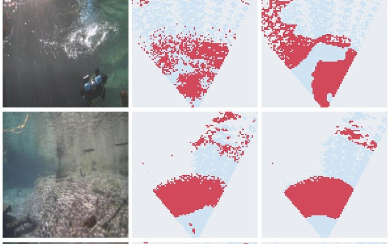
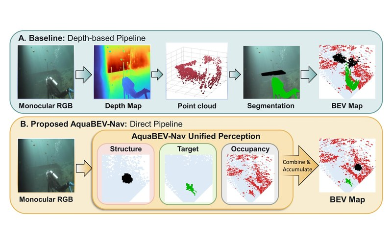
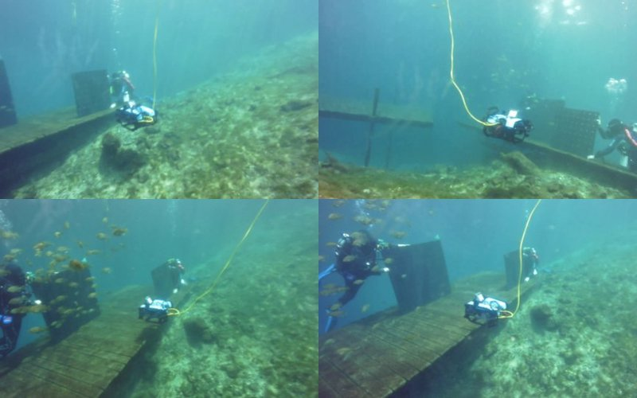
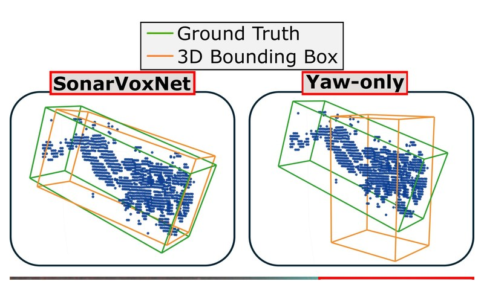
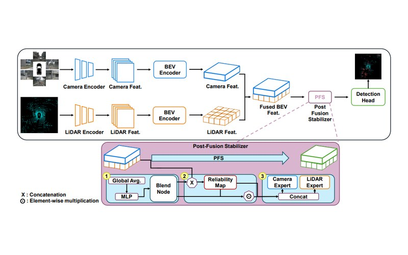

WACV 2027WACV 2027 · Submitted
Predicts bird's-eye-view occupancy around an underwater robot from a single RGB image, using 3D imaging sonar as supervision during training only.

PhD Student · ERA Lab
Electrical & Computer Engineering, University of South Florida — advised by Prof. Xiaomin Lin
Hi! I'm Trung, a first-year PhD student in Electrical & Computer Engineering at the University of South Florida, where I work in the Embodied Robotics and Autonomy (ERA) Lab with Prof. Xiaomin Lin. My research focuses on 3D computer vision, multimodal perception, and robust AI for underwater robotics — helping robots see and act where cameras fail, using sonar, bird's-eye-view representations, and sensor fusion.
I received my B.S. in Computer Science from USF, where I was advised by Prof. Arman Sargolzaei in the RANCS Lab, working on autonomous vehicles, 3D perception, and multimodal fusion. I'm also organizing the Diver3D 3D sonar detection challenge at MaCVi @ WACV 2027.

WACV 2027Predicts bird's-eye-view occupancy around an underwater robot from a single RGB image, using 3D imaging sonar as supervision during training only.

ICRA 2027Drops the monocular-depth stage from a VLM-guided underwater exploration stack and feeds learned BEV occupancy straight into the planner — 88.95% coverage with zero collisions.

OCEANS 2026110 scenes and 95,834 synchronized RGB + 3D multibeam sonar observations (277.6 min) collected from a BlueROV2 at Blue Grotto, Florida.

ICRA 2027Full 9-DoF oriented boxes for freely pitching and rolling divers from sparse 3D sonar, plus Diver3D — the first 3D sonar dataset with full diver orientation labels.

IROS 2026A 3.3M-parameter plug-in that stabilizes fused BEV features, making camera–LiDAR detectors robust to domain shift and sensor failure without retraining the detector.